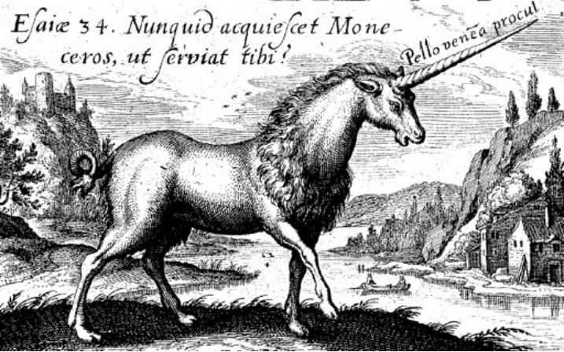
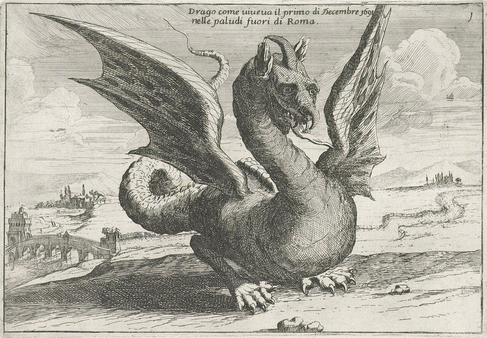

The Word · Studies
Textual comparison · Italian / English
A lexical study · Diodati & King James
Beasts in
Translation
Dragon / dragons · dragone / dragoni · sciacallo / sciacalli
Diodati
King James Version · dragon / dragons
Unicorn / unicorns · liocorno / liocorni
Diodati · liocorno / liocorni
King James Version · unicorn / unicorns